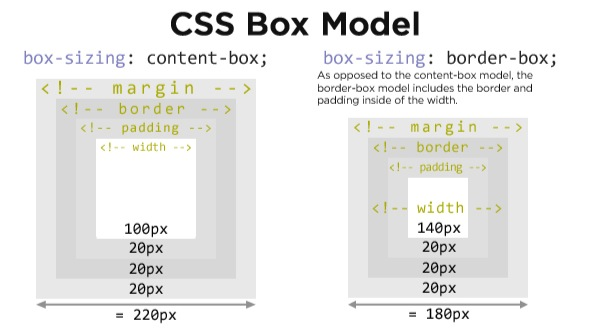

HSUI定义的一些基础样式。
HSUI 将所有元素的盒模型设置为 border-box。在计算盒模型宽高时包含了padding、border，从而使布局更容易计算。
*,
*:before,
*:after {
-moz-box-sizing: border-box;
-webkit-box-sizing: border-box;
box-sizing: border-box;
}
参考链接：
HSUI 将浏览器的基准字号设置为 62.5%，也就是 10px，现在 1rem = 10px —— 为了计算方便。然后在 body 上应用了 font-size: 1.6rem;，将页面字号设置为 16px。
html {
font-size: 62.5%;
}
body {
font-size: 1.6rem; /* =16px */
}与 em 根据上下文变化不同，rem 只跟基准设置关联，只要修改基准字号，所有使用 rem 作为单位的设置都会相应改变。
当然，并非所有所有浏览器的默认字号都是 16px，所以在不同的浏览器上会有细微差异，我们也在寻求更好的方法。
另外，一些需要根据字号做相应变化的场景我们也使用了 em，需要像素级别精确的场景也使用了 px。
参考资源：